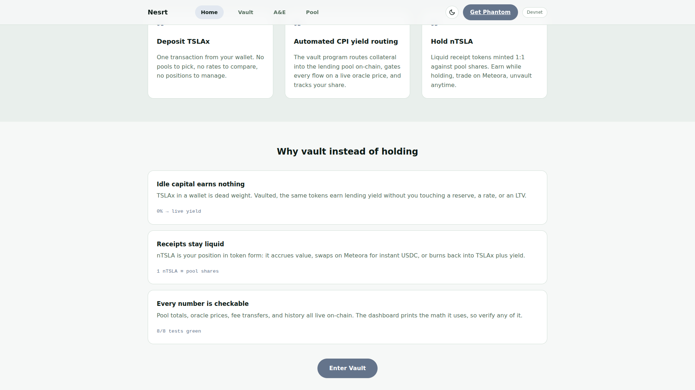

Nesrt
The problem
0.00%
Tokenized equities sit in wallets, earning nothing.
Capital, frozen.
The solution
Vault TSLAx. Earn yield. Hold nTSLA.
One deposit. The vault routes it on-chain.
Keep your exposure. Put the capital to work.
Live on Solana devnet

deposit 55xNRf…nxRrj6 · withdraw 56nyNZ…MPmSdM
Stop watching numbers
nesrt-mu.vercel.appPut your on-chain stocks to work · Solana devnet